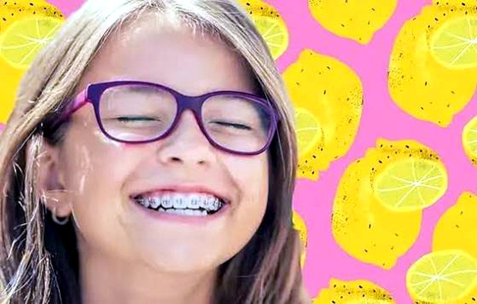
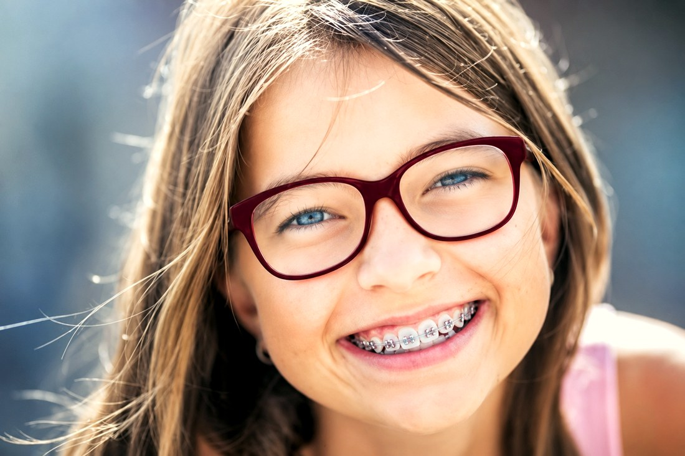
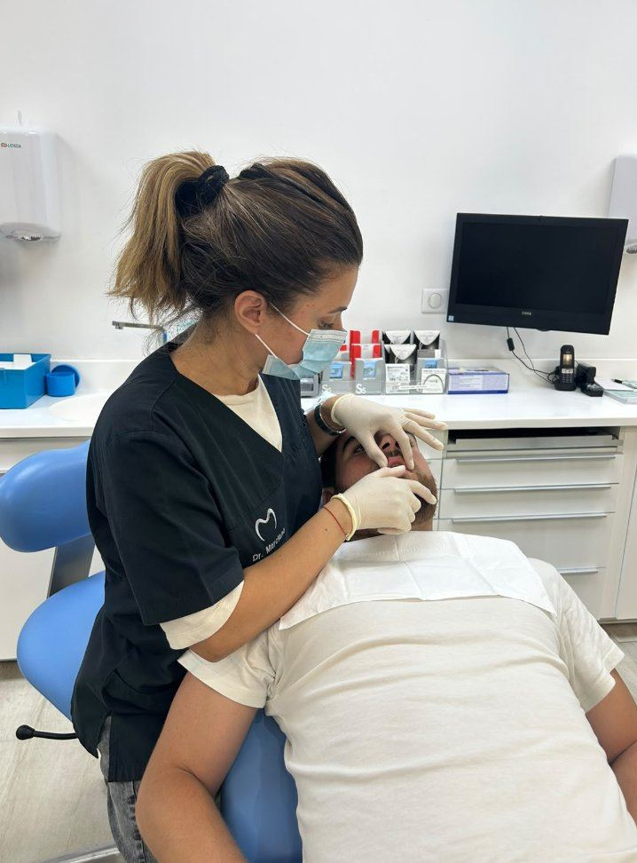
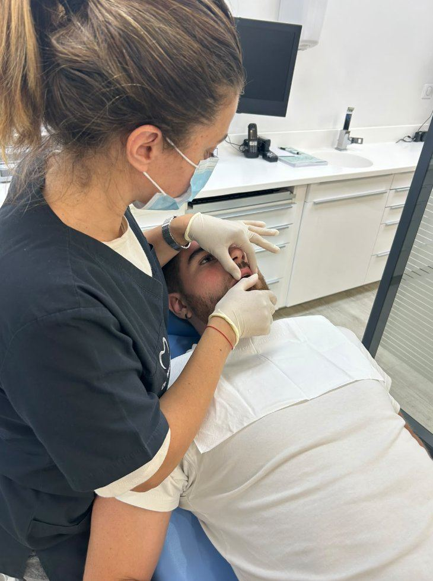
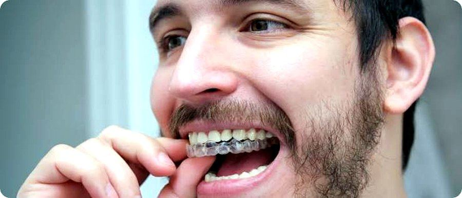
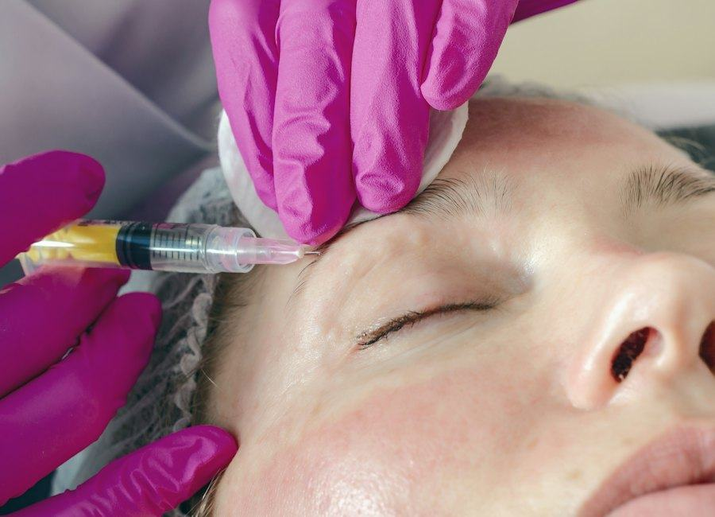
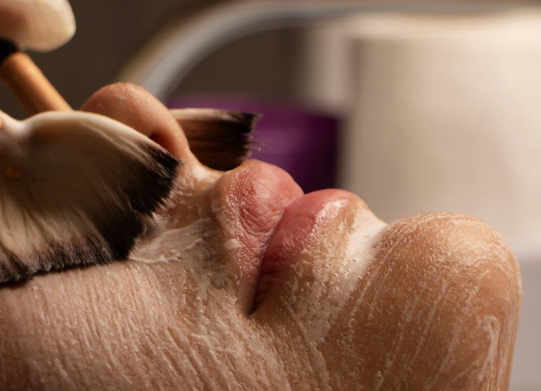
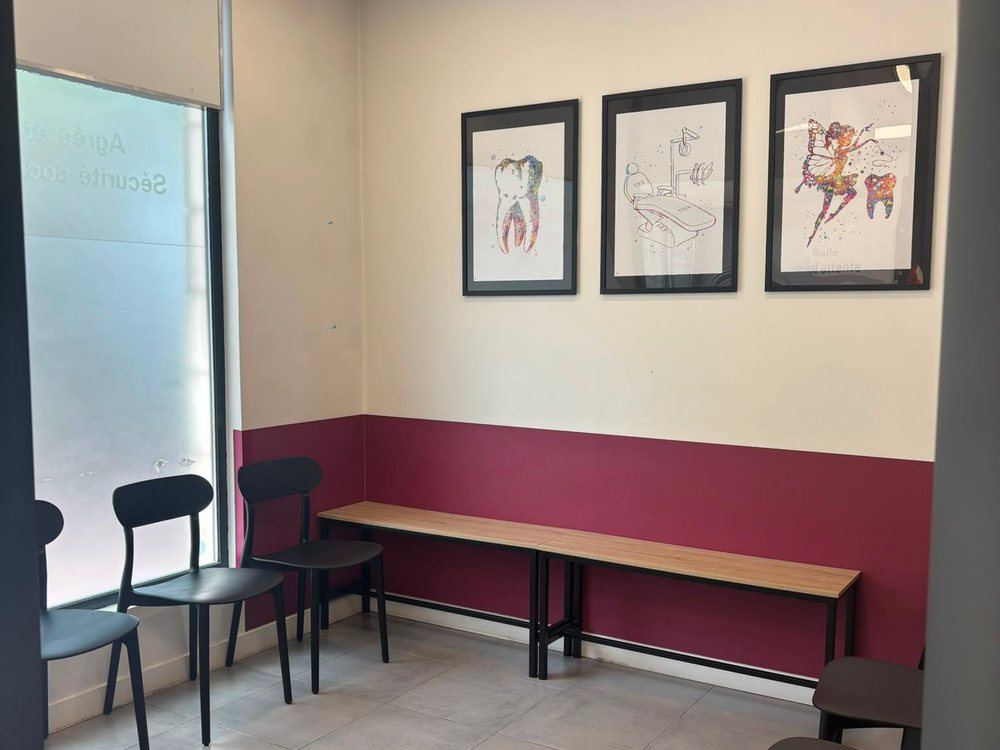

Enfants & adolescents
Dépistage précoce, appareils fixes ou amovibles, dans un cadre ludique et sécurisant pour les plus jeunes.
Orthodontie enfant & adolescent →Cabinet d'orthodontie à Charenton-le-Pont : le Centre d'Orthodontie Gravelle réunit le Dr Jessica Marciano, chirurgien-dentiste (activité orientée orthodontie), et le Dr Marie-Hélène Rit-Guyomard, chirurgien-dentiste. Pour les enfants, les adolescents et les adultes, un suivi attentif et des techniques à la pointe, dans un lieu où l'on se sent bien.
Prendre rendez‑vous 01 43 96 26 00Soins esthétiques médicaux Acide hyaluronique · peeling · hydrofacial à Charenton-le-Pont

Vos soins sont pris en charge selon les tarifs de l'Assurance Maladie.
Pas besoin d'avancer la part remboursée par la Sécurité sociale : nous pratiquons le tiers payant.
La Complémentaire santé solidaire (CMU) est prise en charge au cabinet.

Au Centre d'Orthodontie Gravelle, le Dr Jessica Marciano accompagne chaque patient — enfant, adolescent ou adulte — avec écoute, douceur et pédagogie. On vous reçoit individuellement, dans un climat de confiance, et l'on vous explique chaque décision sans jargon.
Aux côtés du Dr Marie-Hélène Rit-Guyomard, elles mettent leur expertise au service de votre sourire, de la première consultation jusqu'au tout dernier rendez‑vous.
Cabinet et équipeUn suivi personnalisé pour chaque patient, du premier bilan jusqu'à la contention.

Dépistage précoce, appareils fixes ou amovibles, dans un cadre ludique et sécurisant pour les plus jeunes.
Orthodontie enfant & adolescent →
Il n'y a pas d'âge pour aligner ses dents : solutions discrètes et efficaces adaptées à votre vie quotidienne.
Orthodontie adulte →
Des gouttières transparentes sur-mesure, quasi invisibles et amovibles, pour corriger votre sourire en toute discrétion.
Aligneurs invisibles →Au Centre d'Orthodontie Gravelle, le Dr Jessica Marciano propose des soins esthétiques à Charenton-le-Pont (94220) : injections d'acide hyaluronique, peeling et hydrofacial. Consultation préalable, cadre médical, respect du naturel.

Hydrater, repulper et adoucir les traits, avec un résultat naturel, dans un cadre médical sécurisé au cabinet.
Acide hyaluronique →
Raviver l'éclat du teint et affiner le grain de peau, après une évaluation adaptée à votre visage.
Peeling →
Nettoyage en profondeur et hydratation pour une peau plus fraîche et lumineuse, au 176 Rue de Paris.
Hydrofacial →Situé au cœur de Charenton-le-Pont, notre centre dispose d'équipements de dernière génération : radiologie panoramique numérique, salle de stérilisation aux normes et fauteuils dédiés aux enfants comme aux adultes.

Ouvert du lundi au vendredi, sur rendez‑vous
Sécurité sociale, tiers payant et CMU
Enfants, adolescents et adultes accueillis
Un accompagnement clair, étape par étape.
Examen clinique, radiographies et écoute de vos attentes.
Un devis détaillé et un calendrier personnalisés.
Pose de l'appareil ou des aligneurs et suivi régulier.
Stabilisation du résultat pour un sourire durable.
Le Centre d'Orthodontie Gravelle accueille les patients de Charenton-le-Pont et des communes voisines : Saint-Maurice, Maisons-Alfort, Ivry-sur-Seine et l'est parisien (Paris 12e). Que vous cherchiez une orthodontie enfant et adolescent, une orthodontie adulte ou des aligneurs invisibles, le Dr Jessica Marciano, chirurgien-dentiste (activité orientée orthodontie), et le Dr Marie-Hélène Rit-Guyomard, chirurgien-dentiste, vous reçoivent au 176 rue de Paris. Le métro le plus proche est Liberté (ligne 8), à environ 450 m ; Charenton-Écoles (ligne 8) est à environ 1,2 km.
Le Dr Jessica Marciano propose également des soins esthétiques à Charenton-le-Pont : injections d'acide hyaluronique, peeling et hydrofacial, dans le même cabinet, au 94220.
Cabinet agréé Sécurité sociale, remboursement, tiers payant et mutuelle. Questions fréquentes. Contact et rendez‑vous, en ligne sur Doctolib ou par téléphone.
Le Centre d'Orthodontie Gravelle est situé au 176 Rue de Paris, 94220 Charenton-le-Pont (Val-de-Marne). Accessible en transports en commun, sur rendez‑vous du lundi au vendredi.
Une première consultation est conseillée dès 4 ans. L'orthodontie enfant et adolescent comme l'orthodontie adulte sont suivies au cabinet.
Oui. Le cabinet est agréé Sécurité sociale, pratique le tiers payant et accepte la CMU (Complémentaire santé solidaire). Le détail est sur la page remboursement et mutuelle.
Oui, nous proposons les aligneurs invisibles pour les adolescents et les adultes, en complément des appareils traditionnels.
Oui. Le Dr Jessica Marciano réalise des soins esthétiques médicaux au cabinet : injections d'acide hyaluronique, peeling et hydrofacial, après une consultation personnalisée. Rendez-vous sur Doctolib ou au 01 43 96 26 00.
Oui. Le cabinet, au 176 Rue de Paris, 94220 Charenton-le-Pont, accueille aussi les habitants de Saint-Maurice, Maisons-Alfort, Ivry-sur-Seine et Paris 12e.
En ligne sur Doctolib, par téléphone au 01 43 96 26 00, ou via la page Contact.
176 Rue de Paris, 94220 Charenton-le-Pont
01 43 96 26 00
Prenez rendez‑vous dès aujourd'hui avec le Dr Jessica Marciano.
Prendre rendez‑vous 01 43 96 26 00